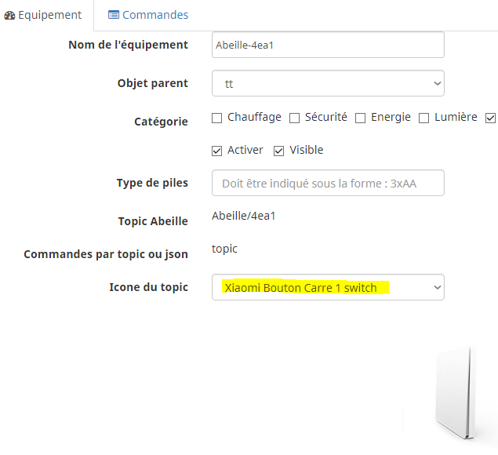

Modele et Fichier JSON¶
(Cette partie doit être revue et mise a jour sur la base des dernieres evolutions)
Fonctionnement¶
Losqu’un équipement Zigbee est appairé/inclus à la zigate, il (normalement) remonte son nom à Abeille.
Le plugin Abeille utilise celui-ci pour créer un nouvel équipement dans Jeedom.
Le nom permet de déterminer un type d’équipement. Chaque type d’équipement possède sa configuration, ses informations et ses actions.
Tout cela est stocké dans un fichier JSON au nom du périphérique (plugins/Abeille/core/config/devices/name/name.json).
name = la valeur du message 0000-01-0005 que l on peut récupérer dans AbeilleParser lorsque le plugin est en mode debug lors de l’appairage/inclusion.
Dans ce fichier JSON vous trouverer toutes les informations de l’équipement mais aussi les commandes info et les commandes actions.
Les commandes infos recupèrent les informations qui remontent d’un équipement.
Les commandes action permettent d’envoyer des commandes aux eéquipements.
Ces commandes sont elles aussi definies dans des fichiers JSON que l on trouve dans le repertoire lugins/Abeille/core/config/devices/Template.
Il est important de comprendre que les commandes infos ou actions sont en relation avec du code du plugin Abeille.
La liste des commandes possibles commence à être importante ce qui doit vous permettre de faire un modele pour votre produit ou au moins en partie.
Mais il existe encore plein de commandes inconnues qui vont demander de developper du code ce qui n’est pas couvert dans cette documentation.
Interface Jeedom¶
Penons un exemple: Capteur de porte Xiaomi.
Dans Jeedom, il apparaîtra sous le widget:
Son nom est pour l’occasion “lumi.sensor_magnet.aq2”. C’est à partir de là que tout le reste a été déduit, par exemple le symbole de porte,...
Si vous sélectionnez, l’objet vous arrivez dans la page suivante:
En sélectionnant “Configuration Avancée”:

Vous pouvez voir tous les paramètres associés à l’équipement et vous en servir d’exemple pour définir les paramètres de configuration à mettre dans le fichier JSON.
Attention tous les paramètres ne sont pas encore pris en compte.
Puis si vous sélectionnez “Commandes”, puis une commande spécifique à l’aide du symbole engrenage:

Puis si vous sélectionnez une commande spécifique comme l’état:

Vous pouvez voir tous les paramètres associés à une commande et vous en servir d’exemple pour définir les paramatres de configuration à mettre dans le fichier JSON.
Si vous modifiez à l’aide de Jeedom la présentation de la commande cela vous permet de savoir ce qu’il faut mettre dans le fichier de conf.
Mais attention car il y a un mais, tous les paramètres ne sont pas encore gérés par Abeille.
Editer JSON¶
(Cette partie doit être mise à jour car les fichiers JSON ont beaucoup changés)
Vous avez plusieurs façons pour éditer le fichier JSON.
- La premiere est d’éditer le fichier sous format texte mais je ne vous le conseille pas car ce n’est pas facile à lire et à modifier (beaucoup de parentheses ouvrantes et fermantes qu’il faut absolument respecter)
- Utiliser un éditeur JSON (il y en a plein sur internet).
Une fois ouvert le fichier peut ressembler à quelque chose comme ca:

Vous retrouvez les même informations que celles vues dans le chapitre précédent.
Comparez les différents équipements entre eux cela vous aidera à comprendre les paramètres.
Vous pouvez faire des copier / coller avec vos informations et sauvegarder. Le fichier est lu à chaque inclusion d’équipement donc vous pouvez rapidement voir le résultat. Pour cela supprimez l’équipement dans Jeedom et refaite une inclusion.
Les fichiers JSON ont évolués et intègrent des inclusion d’autres fichiers JSON. Les fichiers JSON inclus sont dans le répertoire Template. Ces fichiers permettent de définir les commandes individuellement.
PS: si vous supprimez un équipement, n’oubliez pas que cela supprime aussi l’historique des valeurs.
Ajout des icônes pour les objets crées¶
Lorsqu’un équipement est créé, une icône lui est associée.
Pour cela en meme temps que la creation du fichier JSON, il est important de lui associer une icône personnalisée.
Le fichier image au format png nommé node_name.png est a déposer dans le répertoire plugins/Abeille/images/ (Dimension inferieure à 500x500 px semble correct)
Vous devez definir le nom de l image dans le fichier JSON. Une bonne idée est de reprendre le nom de l’équipement pour faciliter la lecture (cofiguration->icone).
Points specifiques¶
Structure des repertoires:
Exemple pour le modele TOTO.
Le modele json doit etre : /var/www/html/plugins/Abeille/core/config/devices/TOTO/TOTO.JSON
Son icone doit etre /var/www/html/plugins/Abeille/images/node_TOTO.png
Les documentations doivent etre dans le repertoire : /var/www/html/plugins/Abeille/core/config/devices/TOTO/doc
Parametres:¶
Quand vous consultez le definition d’un équipement dans jeedom/Abeille vous avez trois tab: Equipement, Param et Commandes.
Pour des raisons historique du developpement du plugin, par defaut tous les parametres possibles sont affichés.
Si vous voulez n’afficher que les parametres relatifs à votre équipement il faut choisir les set de parametres souhaitez dans le modele.
Actuellement les set de parametres sont: paramBatterie[true], paramType[telecommande][paramABC].
uniqId¶
Vous trouverez un champ uniqId dans les modeles. Celui ci n’est pas utilisé actuellement. L’idée est d’avoir une identifiant unique pour chaque fichier JSON. C’est une chaine de caracteres aleatoires.
Definition commandes¶
“execAtCreation”: “Yes”, (Not implemented yet) “execAtCreationDelay”: “60”,(Not implemented yet) “Polling”: “No”, cron -> toutes les minutes, cron15 -> toutes les 15 minutes, cronHourly -> 1 h, cronDaily Daily “PollingOnCmdChange”: “No”, / “PollingOnCmdChange”: “0006-01-0000”, “PollingOnCmdChangeDelay”: 1, en secondes “RefreshData” : 1 / 0 - Executer cette commande pour rafraichir la valeur associée.
Explications:
- si ces defintions sont dans la configuration d’une commande elles seront traitées de al facon suivante.
- les crons vont rechercher les commandes a executer. Exemple un commande getEtat a en config “Polling”: “cron15”, le polling se fera toutes les 15 minutes.
- Lors d’une remontée de valeur pour une commande info, Abeille va chercher les commandes actions du device.
- Si une cmd action a pour PollingOnCmdChange la cmd info qui vient de remonter alors la commande est executée avec un delay de PollingOnCmdChangeDelay s.
- Cela permet pas exemple sur la prise Blittzwolf-BW-SHP13 (TS0121) de declencher la lecture de mA, W, V sur changement d etat.
A noter¶
Je ne vais pas expliquer tous les modeles car cela demanderait beaucoup trop de temps. Donc essayer de faire votre modele par similitude avec d’autres equipemetns.
Si vous faites un modele partagez le sur https://github.com/KiwiHC16/Abeille/issues pour que je l inclus dans Abeille.
Si vous ne parvenez pas à vos fins, ouvrez une issue dans https://github.com/KiwiHC16/Abeille/issues pour que je vous aide.
Pour les developpeurs¶
- L’appareil Ruche contient une commande cachée par type d’objet (identifié das le fichier JSON). Chaque commande cachée permet la création d’objets fictifs pour vérifier la bonne création de l’objet dans Jeedom. Pour avoir les commandes, il faut regénerer l’objet Ruche pour prendre en compte les modifications éventuelles du fichier json. Pour ce faire supprimer Ruche et relancer le démon. Puis un clic sur le bouton pour créer l’objet. Il est fort possible que cette option ne soit pas dispo par defaut et demande de l activer dans le soft.
- Si vour rendez visible ces commandes cachées cela donne:

- En cliquant sur l’un de ces boutons vous vérifiez la bonne création des objets.
- Pas recommandé: Vous pouvez tester la création pure des objets en ligne de commande avec: “php Abeille.class.php 1” en ayant mis les bon paramètres en fin de fichier “Abeille.class.php” (A faire que par ceux qui comprennent ce qu’ils font et n est pas maintenu donc peut disparaitre)
- L’objet obtenu ressemble à cela pour un Xiaomi Temperature Rond:

- Si un objet a été effacé de Jeedom et qu il est toujours dans le réseau zigbee, vous pouvez l’interroger depuis la Ruche et cela devrait le recréer. Cela vous évite de faire un inclusion.
- Mettre dans le champ “Titre” de Get Name, l’adresse (ici example 7c54) et faites Get Name. Rafraîchir la page et vous devriez avoir l’objet.

- Pour un objet qui n’est pas un routeur, exemple Xiaomi IR Presence, qui donc s’endort 99% du temps, il est possible de l’interroger pour qu’il provoque la création de l objet dans Jeedom. Mais pour cela vous devez le reveiller pour qu’il ecoute les demandes venat d’Abeille et y reponde.
- Vous avez aussi la possibilité de lire des attributs de certains équipements en mettant l’adresse dans le titre et les paramètres de l attribut dans le Message comme dans la capture d’écran ci dessous. Regardez dans les logs si vous récupérez des infos (Attention il faut que l’équipement soit à l’écoute):
- Vous avez la possibilité de demander la liste des voisines connues dans la base interne de la Zigate. Pour ce faire vous avez le bouton “Liste Equipements” sur la ruche.